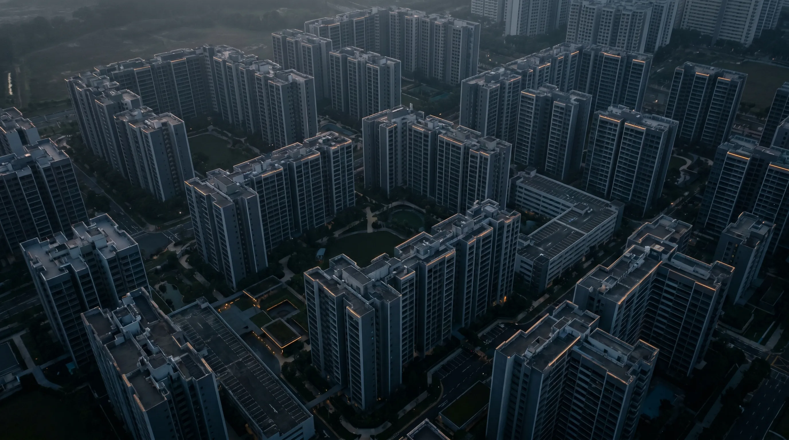

HDB Resale Prices Just Fell for the First Time in 7 Years — What Q1 2026 Means for Your Mortgage
- The headline number that changes everything
- What actually happened in Q1 2026
- Why prices dipped while volume jumped
- What this means if you’re buying
- What this means if you’re upgrading
- Refinancing: the quietest opportunity of 2026
- SORA, fixed or hybrid: which structure fits
- Three things to do this month
- A note on signal vs. noise
The Headline Number That Changes Everything
For the first time in nearly seven years, Singapore’s HDB resale market has cooled. The HDB Resale Price Index (RPI) clocked in at 203.4 in Q1 2026 — a 0.1% quarter-on-quarter dip, ending a 27-quarter streak of unbroken growth, according to the HDB’s official flash estimate.
It’s a small number with big implications. Headlines have already split between “the cooling has finally landed” and “a record 413 million-dollar HDB flats sold.” Both are true. What matters more — especially if you’re buying, upgrading, or refinancing this year — is what the data quietly tells you about where rates, supply, and borrowing power are headed next.
Here’s the picture from where we sit at Nexus Mortgage SG, and how to position your home loan around it.
What Actually Happened in Q1 2026
Read together, the market is not falling — it’s normalising. Prices barely moved while the volume of buyers in the market jumped nearly 20%. That’s the textbook signature of a market where supply has caught up to demand, not one where buyers are walking away.
Two structural forces are doing the work: cooling measures from 2023–2024 are still in force, and a wave of new resale supply is finally hitting the system. Roughly 13,480 HDB flats are expected to complete their five-year Minimum Occupation Period in 2026 — almost double the 7,000–8,000 of 2025 — concentrated in Punggol, Tampines, and Toa Payoh. That’s matched by a parallel surge in private completions, set to rise from ~5,200 units in 2025 to ~7,000 in 2026, per the URA residential property data.
For the first time in years, buyers have leverage and choice.

Roughly 13,480 HDB flats reach their five-year MOP in 2026 — nearly double 2025’s pipeline — concentrated in Punggol, Tampines and Toa Payoh.
Why Prices Dipped While Volume Jumped
The mechanics are worth understanding because they tell you what the next 12 months will probably look like.
When the LTV cap on HDB loans dropped from 80% to 75% in August 2024, every buyer needed more cash or CPF upfront. The MAS 4% mortgage stress test further capped how much banks could lend on paper, even as actual market rates fell well below it. We covered the mechanics of that floor in our MAS stress test guide — and it’s worth re-reading now, because that floor is exactly what’s keeping prices from running away.
On the supply side, every flat that crosses MOP is a potential resale listing. Punggol alone is releasing thousands of units this year. When sellers compete, COVs (cash-over-valuation) compress, and overall transaction prices flatten. That’s what a 0.1% dip looks like in practice — sellers still selling, just no longer dictating terms.
Meanwhile, the 413 million-dollar transactions show that prime, well-located, larger-floor flats (think mature estates near MRT, jumbo flats, premium views) are still moving at a premium. Singapore’s HDB market has bifurcated: ordinary flats normalise; prime flats keep setting records. Property analysts at Stacked Homes’ Q1 2026 review reach the same conclusion.
What This Means If You’re Buying
If you’ve been waiting on the sidelines, the maths is finally tilting in your favour:
- Slightly more inventory. With ~27,000 resale transactions projected for 2026, you’ll see more comparable listings, and longer days-on-market for sellers means more room to negotiate.
- Bank rates are at multi-year lows. Fixed-rate packages now start from around 1.40%, and SORA-pegged floating rates from 0.97% for qualifying loan sizes — both well below the 2.6% HDB concessionary rate. We track all 16 banks live on our current home loan rates page.
- The MAS 4% stress test still applies. Even at sub-2% actual rates, banks calculate your TDSR using a 4% medium-term floor for residential loans, per MAS Notice 645. Plan your maximum loan around that, not the headline rate.
Before you make an offer, run the actual numbers. Our TDSR/MSR affordability calculator gives you the maximum loan a bank will approve under MAS rules, factoring in TDSR, MSR (for HDB and ECs), and the 4% floor. It’s far more accurate than the rough “30% of income” rule of thumb most articles still quote. For a deeper walk-through, see our TDSR and MSR explained breakdown.
What This Means If You’re Upgrading
Upgraders face a more delicate problem: timing. If you sell first, you may face rental costs while waiting for completion. If you buy first, you’re hit with Additional Buyer’s Stamp Duty at 20% on the second property, refundable only if you sell your existing home within six months — see IRAS’s ABSD framework for the full schedule.
The Q1 2026 dip changes the calculus in two ways. First, the resale market is moving faster (6,285 transactions, +19.6% QoQ), so the realistic window between selling and buying has compressed. Second, with new launches reduced ~30% in 2026, picking the right replacement property requires more pre-work, not less.
Some upgraders are also revisiting decoupling — restructuring ownership so one spouse can buy a second property without ABSD. The strategy isn’t right for everyone, but the falling rate environment makes it less expensive to execute. Our decoupling case study walks through a recent S$5M landed example.
Whichever path you choose, get pre-approval in principle from a bank before you commit. Singapore banks honour pre-approvals for 30 days, locking in your borrowing power against any rate moves while you shop.
Refinancing: The Quietest Opportunity of 2026
If you’re already a homeowner — especially one whose package was signed between 2022 and 2024 — Q1 2026 has handed you a window most owners are missing.
Many borrowers are still paying 3.5%–4.0% on legacy fixed-rate packages taken when SORA was elevated. Today’s best fixed rates start from 1.40%, and floating SORA packages from 0.97%, per the latest market scan. The Business Times property section tracks weekly rate moves, and we keep a live comparison on our own rates page.
On a S$1M loan with 25 years remaining, dropping from 3.8% to 1.6% is roughly S$1,100 per month in interest savings.
The catch: timing windows matter. Most home loans have a lock-in period (usually 2 years) and a 3-month notice requirement to redeem. If your lock-in is ending in the next 4–6 months, you should already be quoting refinance options now. Our refinance calculator tells you in 60 seconds whether refinancing makes sense for your specific loan, including legal subsidy and clawback maths. The full timing playbook lives in Refinance Home Loan Singapore: When & How to Save in 2026.
SORA, Fixed, or Hybrid: Which Structure Fits the New Market
With rates this low, the structure question matters more than chasing the absolute lowest headline.
Fixed (1.40%–1.80%)
Sleep-at-night peace of mind. Best if you expect rates to bottom and rise within the next 24 months — a reasonable baseline given that MAS publishes the 1M and 3M SORA daily and the curve has been gently rising since late Q1.
Floating SORA (0.97%–1.60%)
Pure cost optimisation. Best if you have flexibility, healthy cashflow, and you’d refinance again the moment rates moved against you.
Hybrid
Some banks now offer 1-year fixed converting to SORA — useful if you want a buffer while you observe the rate cycle.
There’s no universal “best” — the right structure is the one that matches your cashflow profile, your planned holding period, and how much volatility you can absorb. That’s a five-minute conversation, not a calculator question.
Three Things to Do This Month
Q1 2026 has rewritten both the supply story and the rate story. Position your financing accordingly.
- Re-run your numbers on our affordability calculator using current rates. Most buyers have more borrowing room than they think, even after the LTV cut.
- Check your refinance window. If your lock-in ends in 2026, get quotes now — banks usually need 3 months’ notice.
- Get pre-approved before viewing. Pre-approval is free, takes 1–2 working days, and gives you genuine negotiating leverage in a market where sellers know prices are softening.
- Read the playbook. Download the Singapore Mortgage Free Report — resale-specific TDSR/MSR walkthrough, valuation gap (COV) tactics and lock-in expiry checklist in one PDF.
A Note on Signal vs. Noise
A 0.1% dip is not a crash. Year-on-year, HDB resale prices are still up 1.2%. Singapore’s housing demand fundamentals — population growth, citizen household formation, and a stable labour market tracked by MOM — remain intact. Cross-Asia property analysts at Real Estate Asia flagged the dip as a sign of “balance,” not weakness.
What has changed is the rate environment, the supply pipeline, and the negotiating dynamic. For the first time since 2019, the market is rewarding patience, preparation, and good financing — not just speed.
A Free, Independent Second Opinion on Your Home Loan
Whether you’re buying your first HDB, upgrading to a condo, or sitting on a 2022 fixed package, we compare 16+ MAS-regulated banks at zero cost to you.
Run My Numbers →Prefer a personal review? WhatsApp Dan Ler at +65 8752 0859 for a free portfolio assessment. Banks pay our fee — you pay nothing.
Or grab the full playbook: Singapore Mortgage Free Report — downpayment, TDSR/MSR and refinance worksheets in one PDF.
Nexus Mortgage SG is an independent Singapore mortgage advisory. This article is general information, not financial advice. Figures are illustrative and reflect market conditions as of April 2026; MAS rules and bank rates can change. For official guidance see MAS Notice 645 (TDSR), HDB Q1 2026 Flash RPI, IRAS ABSD and CPF: Home Ownership.